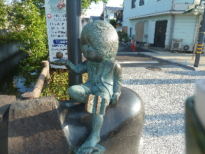
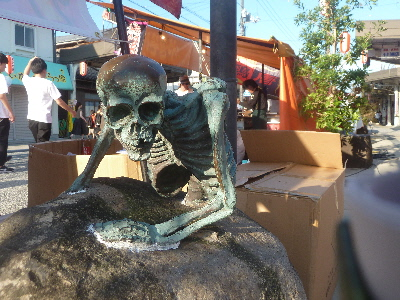
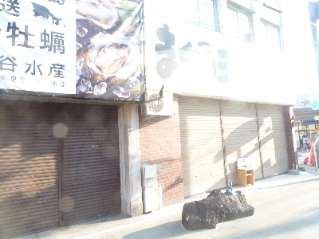

みなと祭なので妖怪はそっちのけです。
2018/07/22
今日はみなと祭なので屋台が沢山出ててにぎやかでした。

水木しげるロードはリニューアルして夜も楽しめるようになったはずですが、屋台とお客さんが多いのでよくわかりませんでした。

妖怪達の周りは屋台の荷物置き場になってました。
雑踏とした物陰の中にいる妖怪像も味があっていいですね。

まだ明るいですが5時過ぎてるのでお店は閉店してました。
普段の夜はきっと暗くて、演出照明が映えるんろうなー。